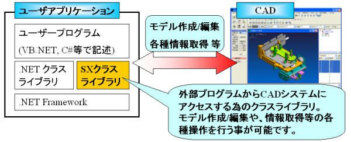
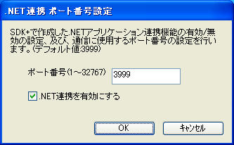
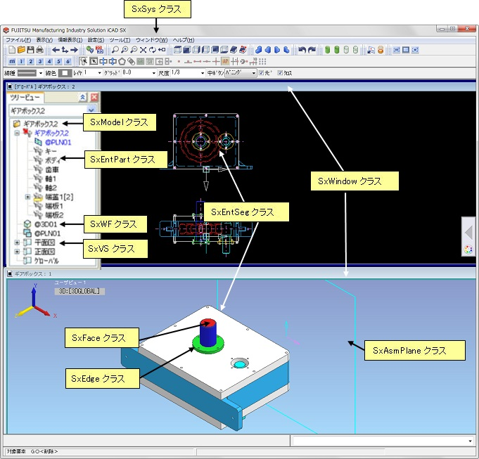
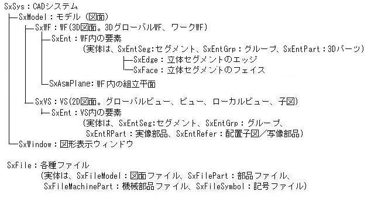

SXクラスライブラリとは？
動作に必要な環境
プログラム実行の為のセットアップ
クラス構造概要
プログラム作成例
アプリケーション実行時の制限事項
V7L6からの変更点
SXクラスライブラリは、Microsoft .NET Framework上に構築された、外部プログラムからiCAD SXを操作する為のクラスライブラリです。
本クラスライブラリを、C#やVisual Basic等の.NET対応言語から利用する事により、自動設計などのCADを操作するアプリケーションを作成する事ができます。
・ハードウェア
iCAD SXの動作環境に準じます。
・ソフトウェア
Microsoft .NET Framework2.0以上に対応した、.NET対応言語(C#, VisualBasic等)を搭載した開発環境(Microsoft Visual Studio等)がインストールされている必要があります。
Visual Studio 2010等の.NET 4.0対応環境で開発を行う場合は、アプリケーションを実行させるPCに、 .NET Framework 4.0のインストールが必要です。
また、本クラスライブラリを使用して開発したアプリケーションを実行させるPCには、 iCAD SDK+ランタイムライセンスと、Microsoft .NET Framework 2.0及び、日本語LanguagePackが必要です。
Microsoft .NET Framework 2.0 Service Pack1 (x86)
Microsoft .NET Framework 2.0 Service Pack1 日本語 Language Pack (x86)
※日本語Language Packをインストールしない場合は、.NET Frameworkから出力されるメッセージ文字列が英語になります。
Microsoft .NET Framework 4 (スタンドアロンのインストーラー)
Microsoft .NET Framework 4 Full 日本語 Language Pack (x86)
※.NET Framework 4.0には、.NET Framework 2.0 も含まれています。
クラスライブラリを使用して作成したアプリケーションを実行するPCでは、 [スタート][全てのプログラム][iCAD SX][iCAD SX環境設定ツール][.NET連携セットアップ]を実行して、CADとの通信ポートを事前に設定して下さい。(事前にiCAD SDK+ランタイムライセンスのパスワードが登録済である必要があります)
ポート番号は、全てのPCで同一の番号を指定するようにして下さい。特に理由がない限りポート番号はデフォルト値の3999を指定して下さい。
この時、.NET Framework2.0がインストールされていない場合、WebブラウザにMicrosoftのダウンロードサイトを表示して終了しますので、インストール後、再度セットアップを実行して下さい。

セットアップに失敗する場合、Windowsインストールフォルダ配下のファイルの書き込み権限がない場合が考えられます。
その場合は、管理者でログイン後、再度セットアップを実行して下さい。
SXクラスライブラリのクラスは、大別すると、以下の種類に分けられます。
・CADシステムや、CAD上の要素等のCADデータにアクセスする為のクラス
・要素情報やジオメトリ情報等の各種情報を格納する情報系クラス
・座標クラスや例外クラスなどのその他のクラス
CADを操作する為のメソッドは、ほとんど、CADデータにアクセスする為のクラスが持っています。
CADを操作する為のクラスは以下のような種類があります。
クラス名 説明 SxSys CADシステムにアクセスする為のクラスです。
CADとの通信初期化や、システムの情報取得、CAD上での要素選択、座標選択、入力レイヤの設定等、システム全体に関連するメソッドを持ちます。
本クラスはstaticメソッドのみを持ちます。 インスタンスの作成は不要です。SxModel CAD上に開設されたモデル(図面)にアクセスする為のクラスです。
新規図面の開設や、保存、情報取得、モデル内の2D図面(VS)/3D図面(WF)の取得など、モデルに関連するメソッドを持ちます。SxWF CAD上のモデル内の3D図面空間(WF)にアクセスする為のクラスです。
3D図面内の要素の取得や、3D→2D等、3D図面空間に関連するメソッドを持ちます。
※WF:3次元要素を格納する3次元図面空間。以下の種類があります。
3DグローバルWF,ワークWF。SxVS CAD上のモデル内の2D図面空間(VS)にアクセスする為のクラスです。
2D図面内の要素の取得や、ビュー、子図の開設など、2D図面に関連するメソッドを持ちます。
※VS:2次元要素を格納する2次元図面空間。以下の種類があります。
ビュー(グローバルビュー、基本ビュー、ローカルビュー)、子図 。SxAsmPlane 3D図面空間(WF)内の組立平面にアクセスする為のクラスです。
組立平面内の要素の取得や、組立平面の開設、オフセット、表示設定等、組立平面に関連するメソッドを持ちます。
※組立平面：3D図面空間に作成できる作業用の平面です。SxWindow CAD上の図形表示ウィンドウにアクセスする為のクラスです。
ウィンドウの移動や開設など、図形表示ウィンドウに関連するメソッドを持ちます。SxEnt CAD上の要素(エンティティ)にアクセスする為の抽象クラスです。
要素の移動、コピー、削除、等の要素共通のメソッドを持ちます。
本クラスのインスタンスを直接生成する事はできません。 インスタンスの生成は以下の派生クラスで行います。SxEntSeg CAD上のセグメントにアクセスする為のクラスです。SxEntの派生クラスです。
作図要素、製図要素、立体要素等が本クラスに属します。
セグメントの生成、編集、情報取得などのメソッドを持ちます。SxEntGrp CAD上のグループにアクセスする為のクラスです。SxEntの派生クラスです。
グループの生成、編集、情報取得などのメソッドを持ちます。SxEntPart CAD上の3Dパーツにアクセスする為のクラスです。SxEntの派生クラスです。
パーツの生成、編集、情報取得などのメソッドを持ちます。SxEntRPart CAD上の2D実像部品にアクセスする為のクラスです。SxEntの派生クラスです。
実像部品の生成、編集、情報取得などのメソッドを持ちます。SxEntRefer CAD上の2次元写像部品、配置子図にアクセスする為のクラスです。SxEntの派生クラスです。
配置子図の生成、写像部品/配置子図の編集、情報取得などのメソッドを持ちます。SxFace ３次元立体要素(立体セグメント、FCソリッド、ソリッド)のフェイスにアクセスするためのクラスです。
フェイスの情報取得などのメソッドを持ちます。SxEdge ３次元立体要素(立体セグメント、FCソリッド、ソリッド)のエッジにアクセスするためのクラスです。
エッジの情報取得などのメソッドを持ちます。SxFile モデルファイル/部品ファイル/記号ファイルにアクセスする為の抽象クラスです。
本クラスのインスタンスを直接生成する事はできません。インスタンスの生成は以下の派生クラスで行います。SxFileModel モデル(図面)ファイルにアクセスする為のクラスです。SxFileの派生クラスです。
Parasolid、IGES、等の各データ形式のファイルも含みます。
モデルをCADで開いたり、保存済み図面の出図などのメソッドを持ちます。SxFilePart 標準部品ファイルにアクセスする為のクラスです。SxFileの派生クラスです。
標準部品の配置などのメソッドを持ちます。SxFileMachinePart 機械部品(JIS部品/3Dパラメトリック部品)ファイルにアクセスする為のクラスです。SxFileの派生クラスです。
機械部品の配置などのメソッドを持ちます。SxFileSymbol 2D記号ファイルにアクセスする為のクラスです。SxFileの派生クラスです。
記号の配置などのメソッドを持ちます。
CADとクラスの関係は以下のようになります。
概念的には、CAD上でのオブジェクト構造は、以下のようになります。(クラスの階層構造ではありません。)

CAD上で2点を指定し、線分を作成するコンソールプログラムの作成例
1. Visual Studio 等の開発ツールを起動し、新規プロジェクト(コンソールプアプリケーション)を作成します。2. 参照の追加で、CADインストールフォルダ\bin\sxnet.dllを追加します。3. 以下の例のように、ソースを作成します。4. プロジェクトをビルドして、実行します。開発方法の詳細については、付属のSXクラスライブラリ利用ガイド(PDF)を参照して下さい。また、システムインストールフォルダ\ETC\SXNET\SAMPLE フォルダ配下に、クラス別のサンプルソースを格納していますので、必要に応じて参照して下さい。[C#の場合のソースコード例]
[VBの場合のソースコード例]using System; using System.Collections.Generic; using System.Text; using sxnet; namespace ConsoleApplication { class Program { static void Main(string[] args) { try { SxEntSeg seg = null; // 作成した2D LINEセグメント SxPos pos1 = null; // 始点座標 SxPos pos2 = null; // 終点座標 // CADとの通信を初期化します。 // (プログラム起動時に呼び出します。) int portno = 3999; SxSys.init(portno); // アクティブウィンドウの表示を2次元に変更します。 SxWindow act_win = SxWindow.getActive(); act_win.setDim(false); // CAD上で、始点、終点座標を入力します。 pos1 = SxSys.getPos(); pos2 = SxSys.getPos(); // 入力座標を結ぶ2次元の線セグメントを作成します。 if (pos1 != null && pos2 != null) { seg = SxEntSeg.createLine2D(pos1, pos2); } } catch (SxException e) { // CAD処理中の例外処理 // コンソールにエラーメッセージを表示します。 Console.WriteLine(e.Message); } catch (Exception e) { // その他の例外処理 Console.WriteLine(e.Message); } } } }
SXクラスライブラリを使用して作成したプログラムを実行するにあたって、以下の制限があります。
・CADが起動している状態でのみ実行可能です。
・ローカルディスク上に配置されたプログラムのみ実行可能です。
・文字列要素および注記要素にOSの言語と異なる文字(日本語・中国語・韓国語)を使用する場合、「iCAD SXで使用できる他言語文字のフォント」を使用してください。
「iCAD SXで使用できる他言語文字のフォント」はiCAD SX の操作ヘルプをご参照ください。
・文字列および注記以外の要素で扱える文字はOSの言語に含まれる文字のみです。
日本語OSでは、外字およびシフトJISコードにない文字コードは使用できません。
・CAD上で2次元リンク編集中の状態での動作はサポートされません。
・クラスライブラリを使用したアプリケーションを実行した時のCADのコマンドログからのマクロ作成/実行はサポートされません。
・追加されたクラス
ありません。
・追加されたフィールド
ありません。
・拡張されたフィールド
ありません。
・追加されたメソッド
ありません。
・拡張されたメソッド
OSの言語と異なる文字(日本語・中国語・韓国語）の作成・編集・問い合わせができるようになりました。
なお、OSの言語と異なる文字を使用する場合、「iCAD SXで使用できる他言語文字のフォント」を使用してください。
クラス メソッド 説明 SxEntSeg SxEntSeg.createNote(SxPos,SxPos,SxPos,string[],int,bool,bool,int,string,bool,bool) 注記文字を作成します。(TrueTypeFont) SxEntSeg.createNote(SxPos,SxPos,SxPos,string[],int,bool,bool,int,double,string,bool,bool) 注記文字を作成します。(TrueTypeFont) SxEntSeg.createText(SxPos,string[],bool,int,int,double,string,bool,bool) 文字列要素を作成します。(TrueTypeFont) SxEntSeg.createText(SxPos,SxPos,string[],bool,int,int,double[],double,string,bool,bool) 文字列要素を作成します。(TrueTypeFont) SxEntSeg.createText(SxPos,SxPos,SxOptCreateText) 文字列要素を作成します。(枠内配置) SxEntSeg.createText(SxPos,SxOptCreateText) 文字列要素を作成します。(点配置) SxEntSeg.editText(string[]) 文字列の編集を行います。要素タイプSEGTYPE_TEXTおよびSEGTYPE_LBL SxEntSeg.editText(string) 文字列の編集(単一行)。要素タイプSEGTYPE_TEXTおよびSEGTYPE_LBL SxEntSeg.getGeom() セグメントのジオメトリを問い合わせます。要素タイプSEGTYPE_TEXTおよびSEGTYPE_LBL SxEntSeg.getGeomList(SxEntSeg[]) 指定セグメント群のジオメトリを一括取得します。要素タイプSEGTYPE_TEXTおよびSEGTYPE_LBL ・削除された、クラス、フィールド、メソッド
ありません。